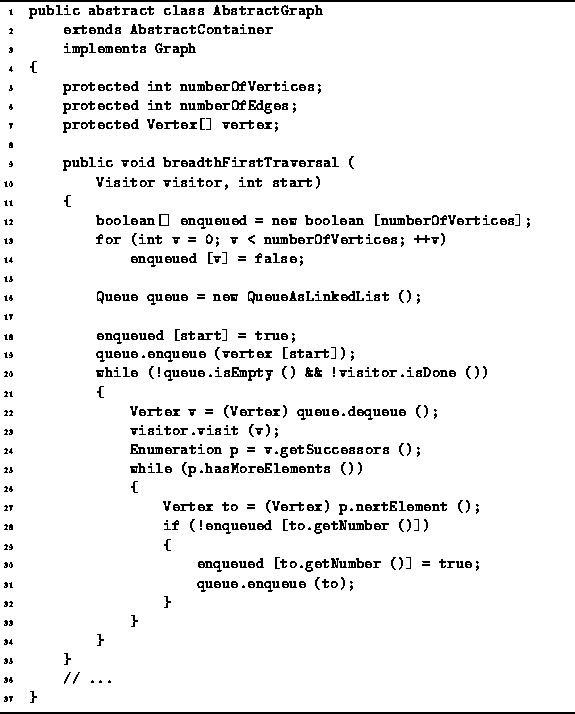

Data Structures and Algorithms
with Object-Oriented Design Patterns in Java
Data Structures and Algorithms
with Object-Oriented Design Patterns in Java
Program  gives the code for the breadthFirstTraversal
method of the AbstractGraph class.
This method takes any Visitor and an integer.
The visit method of the visitor
is called once for each vertex in the graph
and the vertices are visited in breadth-first traversal order
starting from the vertex specified by the integer.
gives the code for the breadthFirstTraversal
method of the AbstractGraph class.
This method takes any Visitor and an integer.
The visit method of the visitor
is called once for each vertex in the graph
and the vertices are visited in breadth-first traversal order
starting from the vertex specified by the integer.

Program: AbstractGraph class breadthFirstTraversal method.
An boolean-valued array, enqueued, is used to keep track of the vertices that have been put into the queue. The elements of the array are all initialized to false (lines 12-14). Next, a new queue is created and the starting vertex is enqueued (lines 16-19).
The main loop of the breadthFirstTraversal method comprises lines 20-34. This loop continues as long as there is a vertex in the queue and the visitor is willing to do more work (line 20). In each iteration exactly one vertex is dequeued and visited (lines 22-23). After a vertex is visited, all the successors of that node are examined (lines 24-33). Every successor of the node that has not yet been enqueued is put into the queue and the fact that it has been enqueued is recored in the array enqueued (lines 28-32).
 Copyright © 1998 by Bruno R. Preiss, P.Eng. All rights reserved.
Copyright © 1998 by Bruno R. Preiss, P.Eng. All rights reserved.